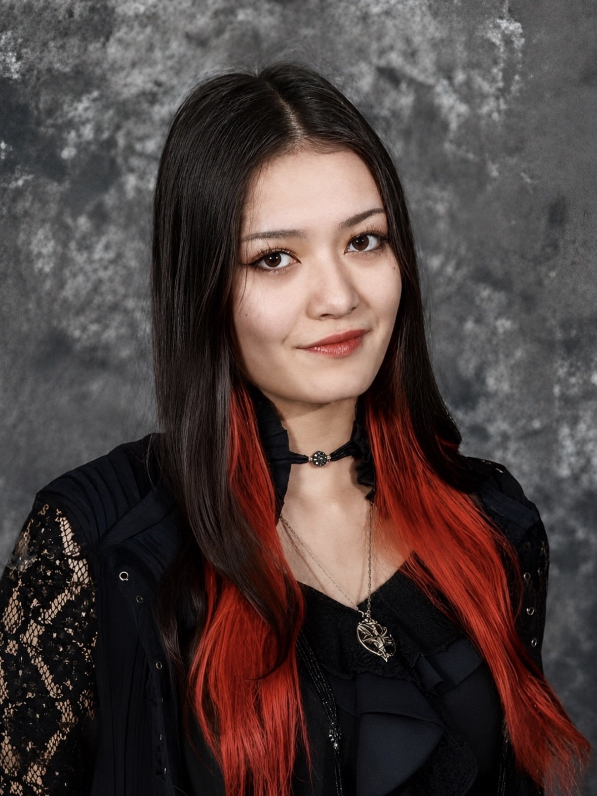

Sakurako Kingsbury
Electronics Engineer
I’m a senior Mechanical Engineering student at Stevens Institute of Technology with a strong interest in robotics, prosthetics, and assistive technology. My experience includes biomedical engineering research, mechatronics, and hands-on projects involving CAD, prototyping, and control systems. Through Pneu-Bionics, I hope to further develop my skills in soft robotics and biomechanical design while contributing to an affordable, practical device that can improve mobility and independence for individuals with physical disabilities.